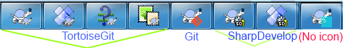

To find out what the different settings are for, just leave your mouse pointer a second on the editbox/checkbox... and a helpful tooltip will popup.
This dialog allows you to specify your preferred language,
and the Git-specific settings.
- Language
Selects your user interface language. What else did you expect? Only languages of installed LanguagePacks are listed. You can download language packs on the TortoiseGit download page or help translating.
- Automatically check for newer versions every week
If checked, TortoiseGit will contact its download site once a week to see if there is a newer version of the program available. Use if you want an answer right away. The new version will not be downloaded; you simply receive an information dialog telling you that the new version is available.
- System sounds
TortoiseGit has three custom sounds which are installed by default.
Error
Notice
Warning
You can select different sounds (or turn these sounds off completely) using the Windows Control Panel. is a shortcut to the Control Panel.
- Create Library
On Windows 7 you can create a Library in which to group working copies which are scattered in various places on your system.
- Git.exe Path
TortoiseGit needs to know which
git.exeto use for it's operations. Enter the full path togit.exehere.![[Caution]](images/caution.png)
Caution git.exe must not be marked to be run in elevated mode (i.e. "Run as administrator" or run in any compatibility mode).
Caution There is a known issue in msysGit/Git for Windows: Git for Windows provides two
git.exe-files (one in a folder namedbinand one in a folder namedcmd). Make sure Git.exe Path points to thebin-folder within the Git for Windows installation folder.![[Tip]](images/tip.png)
Tip In order to debug problems you can open TortoiseGit advanced settings and set "DebugOutputString" to "true" (Section 2.35.9, “Advanced Settings”). Start capturing the debug output. Then start TortoiseGit settings, click on Check now and observe the debug messages.
- Extern DLL Path
If your git installation needs an extra entry in the PATH environment variable, you can enter it here and it will get added to the PATH environment variable automatically when TortoiseGit starts.
This is especially needed if you installed the developer version of msysGit ("Full installer (self-contained) if you want to hack on Git" with the filename
msysGit-fullinstall-*.exe), in this case it is necessary that the[MSYSGIT-INSTALL-PATH]\mingw\bin-folder is on the path (i.e. entered in the Extern DLL Path textbox) in order to execute git.exe.Often you can see if you need this when you start git.exe in
[MSYSGIT-INSTALL-PATH]\mingw\bin-folder and you get a messagebox saying that a dll is missing.
This page allows you to specify which of the TortoiseGit context menu
entries will show up in the main context menu, and which will appear
in the TortoiseGit submenu. By default most items are unchecked and
appear in the submenu.
Most of the time, you won't need the TortoiseGit context menu, apart
for folders that are under version control by Git. For non-
versioned folders, you only really need the context menu when you
want to do a checkout. If you check the option Hide menus
for unversioned paths, TortoiseGit will not add its entries
to the context menu for unversioned folders. But the entries are
added for all items and paths in a versioned folder. And you can
get the entries back for unversioned folders by holding the
Shift key down while showing the context menu.
If there are some paths on your computer where you just don't want TortoiseGit's context menu to appear at all, you can list them in the box at the bottom.
If you right click and drag folder/file in Windows Explorer, a context menu will be shown when you drop. It provides some TortoiseGit actions. You can uncheck to prevent from carelessly clicking the TortoiseGit actions.
This page allows you to specify which of the TortoiseGit context menu
entries will show up in the extend context menu (press Shift
key on right click),
and which will appear in the normal context menu.
This config will help reduce the context menu number at normal usage case
according to your usage module.
This dialog allows you to configure some of TortoiseGit's
dialogs the way you like them.
- Font for log messages
Selects the font face and size used to display the log message itself in the middle pane of the Revision Log dialog, and when composing log messages in the Commit dialog.
- Short date / time format in log messages
If the standard long messages use up too much space on your screen use the short format.
- apply --topo-order
Normally log entries/commits are ordered in descending order of the commit date. '--topo-order' makes the commits appear in topological order (i.e. descendant commits are shown before their parents). Not using this option, might break the graph in the log dialog. However, this option is slower, because all log entries have to be processed before displaying them.
- Can double-click in log list to compare with previous revision
If you frequently find yourself comparing revisions in the top pane of the log dialog, you can use this option to allow that action on double-click. It is not enabled by default because fetching the diff is often a long process, and many people prefer to avoid the wait after an accidental double-click, which is why this option is not enabled by default.
- Abbreviate renamings
Normally renamed files are listed as "long/path/for/file.txt (from long/path/to/file.txt)". If you check this option renamed files will be listed in a shorter format ("long/path/{to => for}/file.txt"), however, this abbreviated format might be harder to understand.
- Symbolize ref names
Show symbols on ref labels to substitute part of the ref names. If this option is enabled, the following description and example will apply. If there is only a single remote, a lightning symbol will substitute the remote name part of each remote branch. If the remote branch is the upstream of a local branch, an up triangle symbol will substitute the branch name part of the remote branch.
- Enable log cache
Load/saves log cache in .git folder (tortoisegit.data, tortoisegit.index) to boost performance of subsequent use of log list. If this option is disabled, the cache files are not read or written. Default is enabled.
- Enable Gravatar
Shows the Gravatar image of the author of the commit in Log Dialog. The URL is customizable so you may specify more options supported by the server, or use your own avatar server. The default URL is
http://www.gravatar.com/avatar/%HASH%?d=identiconCurrently, the supported parameter is%HASH%, which is the MD5 email hash. To specify a default image, addd=parameter, e.g.http://www.gravatar.com/avatar/%HASH%?d=identiconSee Gravatar: Image Requests for a list of parameters.- Draw tag/branch labels on right side
Shows tag/branch labels after the commit message.
This dialog allows you to configure some more of TortoiseGit's
dialogs the way you like them.
- Git.exe Progress Dialog
TortoiseGit can automatically close all progress dialogs when the action is finished without error. This setting allows you to select the conditions for closing the dialogs. The default (recommended) setting is Close manually which allows you to review all messages and check what has happened. However, you may decide that you want to ignore some types of message and have the dialog close automatically if there are no critical changes.
Auto-close if no further options are available will close the dialog if git.exe exited cleanly (i.e. no error occurred) and no further options are presented in the progress dialog.
Auto-close if no errors always closes the dialog if git.exe exited with 0 error code.
- Use recycle bin when reverting
When you revert local modifications, your changes are discarded. TortoiseGit gives you an extra safety net by sending the modified file to the recycle bin before bringing back the pristine copy. If you prefer to skip the recycle bin, uncheck this option.
- Confirm to kill running git process
When enabled, if you close Progress Dialog or Sync Dialog with a running git process, you will be asked for confirmation before killing it. This avoids closing the dialog by accident that kills running git process.
- Randomize Sync Dialog startup position
When enabled, the startup position of Sync Dialog will be randomized. If you open many Sync Dialogs and press pull button at the same time, you may easily press the pull button in any previous Sync Dialog if it finishes and becomes foreground.
- Hide unchanged refs in Ref Compare List
When enabled, unchanged refs will not be shown in Ref Compare List, so you can focus on changed refs. Currently, this list is in Sync Dialog Ref List tab.
- Show git.exe execution timings and timestamp
When enabled, git.exe execution timings and timestamp will be appended at the end of progress message.
- Use auto-completion of file paths and keywords
The commit dialog includes a facility to parse the list of filenames being committed. When you type the first 3 letters of an item in the list, the auto-completion box pops up, and you can press Enter to complete the filename. Check the box to enable this feature.
- Timeout in seconds to stop the auto-completion parsing
The auto-completion parser can be quite slow if there are a lot of large files to check. This timeout stops the commit dialog being held up for too long. If you are missing important auto-completion information, you can extend the timeout.
- Max. items to keep in the log message history
When you type in a log message in the commit dialog, TortoiseGit stores it for possible re-use later. By default it will keep the last 25 log messages for each repository, but you can customize that number here. If you have many different repositories, you may wish to reduce this to avoid filling your registry.
Note that this setting applies only to messages that you type in on this computer. It has nothing to do with the log cache.
- Select items automatically
The normal behaviour in the commit dialog is for all modified (versioned) items to be selected for commit automatically. If you prefer to start with nothing selected and pick the items for commit manually, uncheck this box.
This dialog allows you to configure some of TortoiseGit's
dialogs the way you like them.
This third page mainly affects the Commit dialog and the settings which are stored in git config files.
![[Important]](images/important.png) | Important |
|---|---|
If you have problems entering/storing data please see Section 2.35.6.1, “The hierarchical git configuration”. |
- Language
TortoiseGit can use spell checker modules which are also used by OpenOffice and Mozilla. If you have those installed this property will determine which spell checker to use, i.e. in which language the log messages for your project should be written. The
tgit.projectlanguageconfig key sets the language module the spell checking engine should use when you enter a log message. You can find the values for your language on this page: MSDN: Language Identifiers .Enter this value in decimal. For example English (US) can be entered as
1033.Use
-1to disable the spell checker.- Limit
tgit.logminsizesets the minimum length of a log message for a commit. If you enter a shorter message than specified here, the commit button is disabled. This feature is very useful for reminding you to supply a proper descriptive message for every commit. If this property is not set, or the value is zero, empty log messages are allowed.- Border
tgit.logwidthmarkeris used with projects which require log messages to be formatted with some maximum width (typically 72 characters) before a line break. Setting this property to a non-zero will place a marker to indicate the maximum width and performs line wrapping. Note: this feature will only work correctly if you have a fixed-width font selected for log messages.- Warn on Signed-Off-By on commit
tgit.warnnosignedoffbyis used with projects which require Signed-off-by line in commit messages.- Overlay Icon
tgit.iconis used with projects which wish to show the logo on the taskbar for easier identification when multiple TortoiseGit application instances of different projects are running at the same time.If icon is not 16x16 px in size, it will be automatically scaled. Supported formats are ico, png, jpg, gif, bmp. If no icon is included by that project, you may find one on you own, put it in .git folder and set the relative path in local config. e.g.
.git/logo.icoIf you want to disable it, you may settgit.iconas an empty string in local config. It will fallback to a color block when disabled or load failed. Note that the advanced optionGroupTaskbarIconsPerReposhould be 3 or 4 in order to use this function.
This dialog allows you to configure the text colours
used in TortoiseGit's dialogs the way you like them.
- Possible or real conflict / obstructed
A conflict has occurred during update, or may occur during merge. Update is obstructed by an existing unversioned file/folder of the same name as a versioned one.
This colour is also used for error messages in the progress dialogs.
- Added files
Items added to the repository.
- Missing / deleted / replaced
Items deleted from the repository, missing from the working copy, or deleted from the working tree and replaced with another file of the same name.
- Merged
Changes from the repository successfully merged into the working tree without creating any conflicts.
- Modified / copied
Add with history, or paths copied in the repository. Also used in the log dialog for entries which include copied items.
- Note node
A reference which points to git notes, under refs/notes namespace.
- Use local branch color for current branch
In revision graph, use local branch color for current branch. You may not want to emphasize current branch of a local repository in revision graph.
This dialog allows you to configure the text colours
used in TortoiseGit's dialogs the way you like them.
This page allows you to choose the items for which TortoiseGit will
display icon overlays.
By default, overlay icons and context menus will appear in all open/save dialogs as well as in Windows Explorer. If you want them to appear only in Windows Explorer, check the Show overlays and context menu only in explorer box.
Ignored items and Unversioned items are not usually given an overlay. If you want to show an overlay in these cases, just check the boxes.
You can also choose to mark folders as modified if they contain unversioned items. This could be useful for reminding you that you have created new files which are not yet versioned. This option is only available when you use the default status cache option (see below).
Since it takes quite a while to fetch the status of a working tree, TortoiseGit uses a cache to store the status so the explorer doesn't get hogged too much when showing the overlays. You can choose which type of cache TortoiseGit should use according to your system and working tree size here:
- Default
Caches all status information in a separate process (
TGitCache.exe). That process watches all drives for changes and fetches the status again if files inside a working tree get modified. The process runs with the least possible priority so other programs don't get hogged because of it. That also means that the status information is not real time but it can take a few seconds for the overlays to change.Advantage: the overlays show the status recursively, i.e. if a file deep inside a working tree is modified, all folders up to the working tree root will also show the modified overlay. And since the process can send notifications to the shell, the overlays on the left tree view usually change too.
Disadvantage: the process runs constantly, even if you're not working on your projects. It also uses around 10-50 MB of RAM depending on number and size of your working trees. From version 1.7.0 to 1.7.12 TGitCache did not check the contents of the files, it just checked the last modification time against the time stored in the git index file. Starting from 1.7.13 TGitCache now also checks the contents of the files by default. If you want to restore the old behavior, you can disable checking the contents via the Settings dialog -> Advanced and set TGitCacheCheckContent to "false".
- Shell Extended
Caching is done directly inside the shell extension dll. Each time you navigate to another folder, the status information is fetched again (recursively).
Advantage: can show the status in real time.
Disadvantage: only one folder is cached and for big working trees, it can take much more time to show a folder in explorer than with the default cache or with shell mode. The Shell variant only shows differences of the filesystem to the git index (does not include revision specific information, e.g. if you remove a file from the index the file will show up as unversioned, but with TGitCache the file will show up as deleted until you commit this change).
- Shell
Caching is done directly inside the shell extension dll, but only for the currently visible folder. Each time you navigate to another folder, the status information is fetched again.
Advantage: needs only very little memory (around 1 MB of RAM) and can show the status in real time.
Disadvantage: Since only one folder is cached, the overlays don't show the status recursively. For big working trees, it can take more time to show a folder in explorer than with the default cache. The Shell variant only shows differences of the filesystem to the git index (does not include revision specific information, e.g. if you remove a file from the index the file will show up as unversioned, but with TGitCache the file will show up as deleted until you commit this change).
- None
With this setting, the TortoiseGit does not fetch the status at all in Explorer. Because of that, files don't get an overlay and folders only get a 'normal' overlay if they're versioned. No other overlays are shown, and no extra columns are available either.
Advantage: uses absolutely no additional memory and does not slow down the Explorer at all while browsing.
Disadvantage: Status information of files and folders is not shown in Explorer. To see if your working trees are modified, you have to use the “Check for modifications” dialog.
The next group allows you to select which classes of storage should show overlays. By default, only hard drives are selected. You can even disable all icon overlays, but where's the fun in that?
Network drives can be very slow, so by default icons are not shown for working trees located on network shares.
USB Flash drives appear to be a special case in that the drive type is identified by the device itself. Some appear as fixed drives, and some as removable drives.
The Exclude Paths are used to tell TortoiseGit those paths for which it should not show icon overlays and status columns. This is useful if you have some very big working trees containing only libraries which you won't change at all and therefore don't need the overlays. For example:
f:\development\TortoiseGit will disable
the overlays only on that specific folder. You
still can see the overlays on all files and folder inside that folder.
f:\development\TortoiseGit* will disable the
overlays on all files and folders whose path
starts with f:\development\TortoiseGit. That
means you won't see overlays for any files and folders below that
path.
The same applies to the Include Paths. Except that for those paths the overlays are shown even if the overlays are disabled for that specific drive type, or by an exclude path specified above.
Users sometimes ask how these three settings interact, and the definitive answer is:
if (path is in include list) show overlays if (path is allowed drive type) AND (path is not in exclude list) show overlays
The include list always makes the overlays show. Otherwise, overlays are shown for all marked drive types unless the path is excluded.
TGitCache.exe also uses these paths to restrict its scanning. If you want it to look only in particular folders, disable all drive types and include only the folders you specifically want to be scanned.
Sometimes you will exclude areas that contain working trees, which saves TGitCache from scanning and monitoring for changes, but you still want a visual indication that such folders are versioned. The Show excluded folders as 'normal' checkbox allows you to do this. With this option, versioned folders in any excluded area (drive type not checked, or specifically excluded) will show up as normal and up-to-date, with a green check mark. This reminds you that you are looking at a working tree, even though the folder overlays may not be correct. Files do not get an overlay at all. Note that the context menus still work, even though the overlays are not shown.
As a special exception to this, drives A:
and B: are never considered for the
Show excluded folders as 'normal' option.
This is because Windows is forced to look on the drive, which can
result in a delay of several seconds when starting Explorer, even
if your PC does have a floppy drive.
You can change the overlay icon set to the one you like best. Especially you can disable overlays which you do not need like assume-valid and skip-worktree, however other Tortoise* tools use these two for different purposes.
Note that if you change overlay set, you may have to restart
your computer for the changes to take effect.
Because the number of overlays available is severely restricted,
you can choose to disable some handlers to ensure that the ones
you want will be loaded. Because TortoiseGit uses the common
TortoiseOverlays component which is shared with other Tortoise
clients (e.g. TortoiseSVN, TortoiseCVS, TortoiseHg) this setting will affect
those clients too.
Here you can configure your proxy server, if you need one to get
through your company's firewall.
If you need to set up per-repository proxy settings, you will
need to use the Git config file to
configure this. Consult Section G.3.25, “git-config(1)” for more details.
You can also specify which program TortoiseGit should use to establish a secure connection to a git repository which is access using ssh. We recommend that you use TortoiseGitPLink.exe. This is a version of the popular Plink program, and is included with TortoiseGit, but it is compiled as a Windowless app, so you don't get a DOS box popping up every time you authenticate.
You must specify the full path to the executable. For TortoiseGitPLink.exe this is the standard TortoiseGit bin directory. Use the button to help locate it, e.g.:
"C:\Program Files\TortoiseGit\bin\TortoiseGitPLink.exe"
| Tip |
|---|---|
If you want to use OpenSSH shipped by Git for Windows/msysGit just enter |
One side-effect of not having a window is that there is nowhere for any error messages to go, so if authentication fails you will simply get a message saying something like “Unable to write to standard output”. For this reason we recommend that you first set up using standard Plink. When everything is working, you can use TortoiseGitPlink with exactly the same parameters.
TortoiseGitPlink does not have any documentation of its own because it is just a minor variant of Plink. Find out about command line parameters from the PuTTY website
To avoid being prompted for a password repeatedly, you might also consider using a password caching tool such as Pageant. This is also available for download from the PuTTY website or included in the TortoiseGit package.
Finally, setting up SSH on clients is a non-trivial process which is beyond the scope of this help file. However, you can find a guide in the TortoiseGit FAQ listed under Appendix F, Tips and tricks for SSH/PuTTY or the latest version Git/TortoiseGit SSH How-To .
This page allows you to specify configure how mails should be send.
- SMTP, directly to destination server
When this option is selected, TortoiseGit directly connects to the SMTP server(s) (on port 25) which is/are responsible for the specific destination email-address(es). This is the default for TortoiseGit (unless some different method is configured).
Important This might be problematic if your ISP blocks outgoing SMTP connections (port 25) or you have a dialup internet connection. In the ladder case some destination MTAs might not accept your mails or mark them as SPAM.
- MIME
When this option is selected, TortoiseGit uses the Microsoft MIME-API for sending mails. For this, you need a MAPI capable mail client (e.g. Thunderbird or Outlook).
Important If you don't send patches as attachments, you might need to make sure that no auto line wrapping takes place. For Thunderbird there is an add-on (Toggle Word Wrap) available.
- use configured server
This is the recommended way for sending mails. Just enter the same data as in your mail tools (MUA).
Here you can define your own programs that TortoiseGit should use. The default setting is to use tools which are installed alongside TortoiseGit.
Read Section 2.17.6, “External Diff/Merge Tools” for a list of some of the external diff/merge programs that people are using with TortoiseGit.
An external diff program may be used for comparing different
revisions of files. The external program will need to
obtain the filenames from the command line, along with
any other command line options. TortoiseGit uses
substitution parameters prefixed with %.
When it encounters one of these it will substitute the
appropriate value. The order of the parameters will depend
on the Diff program you use.
- %base
The original file without your changes
- %bname
The window title for the base file
- %mine
Your own file, with your changes
- %yname
The window title for your file
- %bpath
Full path to the original file
- %ypath
Full path to your file
- %brev
The revision of the original file, if available
- %yrev
The revision of the second file, if available
The window titles are not pure filenames.
TortoiseGit treats that as a name to display and creates
the names accordingly. So e.g. if you're doing a
diff from a file in revision 123 with a file
in your working tree, the names will be
filename: revision 123
and
filename: working tree
For example, with ExamDiff Pro:
C:\Path-To\ExamDiff.exe %base %mine --left_display_name:%bname
--right_display_name:%yname
or with KDiff3:
C:\Path-To\kdiff3.exe %base %mine --L1 %bname --L2 %yname
or with WinMerge:
C:\Path-To\WinMerge.exe -e -ub -dl %bname -dr %yname %base %mine
or with Araxis:
C:\Path-To\compare.exe /max /wait /title1:%bname /title2:%yname
%base %mine
You can also specify a different diff tool to use on Git properties. Since these tend to be short simple text strings, you may want to use a simpler more compact viewer.
If you have configured an alternate diff tool, you can access TortoiseGitMerge and the third party tool from the context menus. → uses the primary diff tool, and Shift+ → uses the secondary diff tool.
A viewer program for unified-diff files (GNU diff or patch files).
No parameters are required.
The Default option is to check for
a file association for .diff files,
and then for .txt files.
If you don't have a viewer for .diff
files, you will most likely get NotePad.
The original Windows NotePad program does not behave well on files which do not have standard CR-LF line-endings. Since most unified diff files have pure LF line-endings, they do not view well in NotePad. However, you can use a free NotePad replacement Notepad2 (this is also shipped with TortoiseGit) which not only displays the line-endings correctly, but also colour codes the added and removed lines.
An external merge program used to resolve conflicted files. Parameter substitution is used in the same way as with the Diff Program.
- %base
the original file without your or the others changes
- %bname
The window title for the base file
- %mine
your own file, with your changes
- %yname
The window title for your file
- %theirs
the file as it is in the repository
- %tname
The window title for the file in the repository
- %merged
the conflicted file, the result of the merge operation
- %mname
The window title for the merged file
For example, with Perforce Merge:
C:\Path-To\P4Merge.exe %base %theirs %mine %merged
or with KDiff3:
C:\Path-To\kdiff3.exe %base %mine %theirs -o %merged
--L1 %bname --L2 %yname --L3 %tname
or with Araxis:
C:\Path-To\compare.exe /max /wait /3 /title1:%tname /title2:%bname
/title3:%yname %theirs %base %mine %merged /a2
or with WinMerge (2.8 or later):
C:\Path-To\WinMerge.exe %merged
In the advanced settings, you can define a different diff and merge
program for every file extension. For instance you could associate
Photoshop as the “Diff” Program for .jpg files :-)
To associate using a file extension, you need to specify the extension.
Use .bmp to describe Windows bitmap files.
The original Windows NotePad program does not behave well on files which do not have standard CR-LF line-endings. However, a lot of git configuration files do not have a standard CR-LF line-ending. Because of this TortoiseGit uses a free (shipped) NotePad replacement Notepad2 which displays the line-endings correctly by default.
For your convenience, TortoiseGit saves many of the settings
you use, and remembers where you have been lately. If you
want to clear out that cache of data, you can do it here.
- URL history
Whenever you checkout a working tree, merge changes or use the repository browser, TortoiseGit keeps a record of recently used URLs and offers them in a combo box. Sometimes that list gets cluttered with outdated URLs so it is useful to flush it out periodically.
If you want to remove a single item from one of the combo boxes you can do that in-place. Just click on the arrow to drop the combo box down, move the mouse over the item you want to remove and type Shift+Del.
- Log messages (Input dialog)
TortoiseGit stores recent commit log messages that you enter. These are stored per repository, so if you access many repositories this list can grow quite large.
- Log messages (Show log dialog)
TortoiseGit caches log messages fetched by the Show Log dialog to save time when you next show the log. If someone else edits a log message and you already have that message cached, you will not see the change until you clear the cache. Log message caching is enabled on the Log Cache tab.
- Dialog sizes and positions
Many dialogs remember the size and screen position that you last used.
- Action log
TortoiseGit keeps a log of everything written to its progress dialogs. This can be useful when, for example, you want to check what happened in a recent update command.
The log file is limited in length and when it grows too big the oldest content is discarded. By default 4000 lines are kept, but you can customize that number.
From here you can view the log file content, and also clear it.
Git uses the concept of a hierarchical configuration (cf. Section G.3.25, “git-config(1)”). I.e. there are multiple levels; settings in higher levels override values in lower levels. The Effective tab shows you the effective values for the current scope (read-only).
Select any level (e.g. Local - the current repository settings stored locally in .git/config, Project - settings for the current repository stored within the repository in /.tgitconfig, Global - settings for the current user, System - settings for all users of the system) to see the values stored there.
In order to change settings select a level, enter the values, select where to store to and click on .
| Caution |
|---|---|
If you want to inherit a value of a higher level don't leave a textbox empty (this means than an empty string will be stored, which might evaluate to |
Set git basic configuration
Name and Email are required for git to operate correctly.
AutoCrlf If true, makes git convert CRLF at the end of lines in text files to LF when reading from the filesystem, and convert in reverse when writing to the filesystem. The variable can be set to input, in which case the conversion happens only while reading from the filesystem but files are written out with LF at the end of lines. A file is considered "text" (i.e. be subjected to the autocrlf mechanism) based on the file's crlf attribute, or if crlf is unspecified, based on the file's contents.
SafeCrlf If true, makes git check if converting CRLF as controlled by core.autocrlf is reversible. Git will verify if a command modifies a file in the work tree either directly or indirectly. For example, committing a file followed by checking out the same file should yield the original file in the work tree. If this is not the case for the current setting of core.autocrlf, git will reject the file. The variable can be set to "warn", in which case git will only warn about an irreversible conversion but continue the operation.
QuotePath Controls the core.quotepath setting which might be interesting when you have non ASCII filenames: See Section G.3.25, “git-config(1)”.
| Important |
|---|---|
If you have problems entering/storing data please see Section 2.35.6.1, “The hierarchical git configuration”. |
Set git remote configuration
Remote The name of the remote, usually the default one is called 'origin'.
URL The URL of the remote. It can be http / https / ssh / git protocol or local file system. Note that for local file system, the path should use forward slash '/'; and for absolute path, use /C/Project1 for C:\Project1.
Push URL The Push URL of the remote. It is for some cases you cannot use the same url to fetch and push (for example, fetch via passwordless git protocol but push via ssh). Otherwise, leave it empty. Note: This is not designed for forking workflow. For forking workflow, you should have 2 remotes. The format is the same as URL.
Putty Key The putty key file to load when performing network operations.
Tag This sets remote.name.tagopt config, which controls the default tag fetching behaviour of the specified remote. Reachable: Download tags that are reachable from remote branch heads (default behaviour). None: No tags are downloaded (--no-tags). (git 1.9 and later) All: All tags as well as branches are downloaded (--tags). (prior to git 1.9) All tags only: Only all tags are downloaded but no branches are downloaded (--tags). Use case of All: Always fetch tags from a git-svn mirror. Subversion tags never exist on trunk, so such tags are not reachable from branch heads.
Prune This sets remote.name.prune config, which controls the default prune option of remote tracking branches of the specified remote. Default is false.
Set simple credential helper configuration
Advanced This is used if the credential helper configuration does not match any simple settings. If you choose other than Advanced, except the corrsponding credential.helper, all other config keys credential.* or credential.*.* are removed.
None No credential config keys are in all config levels.
wincred - this repository only wincred is enabled in local config. This option is visible only if wincred is installed.
winstore - this repository only winstore is enabled in local config. This option is visible only if winstore is installed for current Windows user.
wincred - current Windows user wincred is enabled in global config. This option is visible only if wincred is installed.
winstore - current Windows user winstore is enabled in global config. This option is visible only if winstore is installed for current Windows user.
wincred - all Windows users wincred is enabled in system config. This option is visible only if wincred is installed.
Advanced credential helper configuration
Config type Either Local, Global or System config.
URL Define a context-specific configuration based on URL pattern. By default, the path component is not considered as a different context.
Helper Select a credential helper program. wincred and winstore are predefined in TortoiseGit. It is possible to use other credential helpers or with extra options.
Username A default username, if one is not provided in the URL.
Use HTTP path component Also considers the path component of URL to match the configuration context.
You can find more information at Section G.4.3, “gitcredentials(7)”.
TortoiseGit can use a COM plugin to query issue trackers when in the commit dialog. The use of such plugins is described in Section 2.34.2, “Getting Information from the Issue Tracker”. If your system administrator has provided you with a plugin, which you have already installed and registered, this is the place to specify how it integrates with your working tree.
| Tip |
|---|---|
| There is also a hierarchical git configuration to associate issue tracker plugin with your project, rather than with to a specific directory path. Such settings are more portable. See Section 2.34, “Integration with Bug Tracking Systems / Issue Trackers” to configure these settings. |
Click on to use the plugin with
a particular working tree. Here you can specify the working tree
path, choose which plugin to use from a drop down list of all
registered issue tracker plugins, and any parameters to pass.
The parameters will be specific to the plugin, but might include
your user name on the issue tracker so that the plugin can
query for issues which are assigned to you.
See Section 2.34, “Integration with Bug Tracking Systems / Issue Trackers” for a descriptions of the different options.
| Important |
|---|---|
If you have problems entering/storing data please see Section 2.35.6.1, “The hierarchical git configuration”. |
The settings used by TortoiseGitBlame are controlled from the
main context menu, not directly with TortoiseGitBlame itself.
Details for the parameters for the blame algorithm are described in Section G.3.9, “git-blame(1)”.
- Colors
TortoiseGitBlame can use the background colour to indicate the age of lines in a file. You set the endpoints by specifying the colours for the newest and oldest revisions, and TortoiseGitBlame uses a linear interpolation between these colours according to the repository revision indicated for each line.
- Font
You can select the font used to display the text, and the point size to use. This applies both to the file content, and to the author and revision information shown in the left pane.
- Tab size
Defines how many spaces to use for expansion when a tab character is found in the file content.
- Detect moved or copied lines
Disabled Traditional blame algorithm, the search for parents is limited to the file and will follow renames.
Within file Extra passes of inspection are applied to detect moved and copied lines within the file (
git blame -M).From modified files In addition to the annotated file detect moved or copied lines from all modified files within a commit (
git blame -C).At file creation In addition to the annotated file and the modified files within a commit detect moved or copied lines from other files in the commit that creates the file (
git blame -C -C).From existing files In addition detect moved or modified lines from other files in any commit (
git blame -C -C -C).- Number of characters required for moved or copied line detection
Lower bound on the number of alphanumeric characters that Git must detect as moving/copying between files for it to associate those lines with the parent commit.
Within a file Number of alphanumeric characters required to detect moving lines within a file (
git blame -M|<num>|).Between files Number of alphanumeric characters required to detect moved or copied lines between files (
git blame -C|<num>|).- Ignore whitespace
Defines if whitespace is ignored when comparing the parent's version and the child's version to find where the lines came from (
git blame -w).- Show complete log
Defines if the log should be complete, i.e. the log contains all changes for a file, even the changes have no impact on the file content of the annotated revision. If deactivated the log contains only revisions which last modified a line for the annotated revision.
- Follow renames
Defines if the log should follow renames, i.e. if the log does not stop when a file was renamed in the past, but include all changes before the rename.
A few infrequently used settings are available only in the advanced page of the settings dialog. These settings modify the registry directly and you have to know what each of these settings is used for and what it does. Do not modify these settings unless you are sure you need to change them.
- AutoCompleteMinChars
The minimum amount of chars from which the editor shows an auto-completion popup. The default value is
3.- AutocompleteRemovesExtensions
The auto-completion list shown in the commit message editor displays the names of files listed for commit. To also include these names with extensions removed, set this value to
true.- BlockStatus
If you don't want the explorer to update the status overlays while another TortoiseGit command is running (e.g. Update, Commit, ...) then set this value to
true.- CacheTrayIcon
To add a cache tray icon for the TGitCache program, set this value to
true. This is really only useful for developers as it allows you to terminate the program gracefully.- Debug
Set this to
trueif you want a dialog to pop up for every command showing the command line used to start TortoiseGitProc.exe.- DebugOutputString
Set this to
trueif you want TortoiseGit to print out debug messages during execution. The messages can be captured with special debugging tools only (like Debug View from the SysInternals Suite).- FullRowSelect
The status list control which is used in various dialogs (e.g., commit, check-for-modifications, add, revert, ...) uses full row selection (i.e., if you select an entry, the full row is selected, not just the first column). This is fine, but the selected row then also covers the background image on the bottom right, which can look ugly. To disable full row select, set this value to
false.- GroupTaskbarIconsPerRepo
This option determines how the Win7 taskbar icons of the various TortoiseGit dialogs and windows are grouped together. This option has no effect on Windows XP or Vista!
The default value is 3. With this setting, the icons are grouped together by application type per working tree. All dialogs from TortoiseGit of one working tree are grouped together, all windows from TortoiseGitMerge of one working tree are grouped together, ... For example, if you have a log dialog and a push dialog open for working tree
C:\A, and a check-for-modifications dialog and a log dialog for working treeC:\B, then there are two application icon groups shown in the Win7 taskbar, one group for each working tree. But TortoiseGitMerge windows are not grouped together with TortoiseGit dialogs.
If set to 4, then the grouping works as with the setting set to 3, except that TortoiseGit, TortoiseGitMerge, TortoiseGitBlame, TortoiseGitIDiff and TortoiseGitUDiff windows of one working tree are all grouped together. For example, if you have the log dialog open and then double click on a modified file, the opened TortoiseGitMerge diff window will be put in the same icon group on the taskbar as the log dialog icon.
If set to 1, then the grouping works as with the setting set to 3 (grouping by application), except that grouping takes place independently of the working tree. This was the default before TGit 1.8.1.2.
If set to 2, then the grouping works as with the setting set to 4, except that grouping takes place independently of the working tree. Thus all TortoiseGit icons are grouped to only show one icon.
- GroupTaskbarIconsPerRepoOverlay
This has no effect if the option
GroupTaskbarIconsPerRepois set to 0 (see above).If this option is set to
true, then every icon on the Win7 taskbar shows a small colored rectangle overlay, indicating the working tree the dialogs/windows are used for.
- MaxRefHistoryItems
This options sets the maximum browse ref history (Right click ref hyperlink to find it). The default is 5.
- NoSortLocalBranchesFirst
This option toggles if the branches are sorted fully by name (
true) or if local branches should appear above remote ones (git default,false). The default value isfalse.- NumDiffWarning
If you want to show the diff at once for more items than specified with this settings, a warning dialog is shown first. The default is 10.
- ReaddUnselectedAddedFilesAfterCommit
This option toggles the re-adding of unselected added files after a commit. Up to TortoiseGit 1.7.10 added files which were not checked on a commit, were removed from the index and unversioned after the commit. Set this value to
falseto restore the old behavior. Set this value totrueto readd these files again after the commit (default).- ScintillaDirect2D
This option enables the use of Direct2D accelerated drawing in the Scintilla control which is used as the edit box in e.g. the commit dialog (also for the attached patch window), the unified diff viewer and TortoiseGitBlame. With some graphic cards, however, this sometimes doesn't work properly so that the cursor to enter text isn't always visible, the redraw does not work or the background is flashing. It's disabled by default. You can turn this feature on by setting this value to
true.- ShellMenuAccelerators
TortoiseGit uses accelerators for its explorer context menu entries. Since this can lead to doubled accelerators (e.g. the
Git Commithas the Alt-C accelerator, but so does theCopyentry of explorer). If you don't want or need the accelerators of the TortoiseGit entries, set this value tofalse.- ShowContextMenuIcons
This can be useful if you use something other than the windows explorer or if you get problems with the context menu displaying incorrectly. Set this value to
falseif you don't want TortoiseGit to show icons for the shell context menu items. Set this value totrueto show the icons again.- ShowAppContextMenuIcons
If you don't want TortoiseGit to show icons for the context menus in its own dialogs, set this value to
false.- ShowListBackgroundImage
If you do not want to have a small background image in list controls (e.g. Commit Dialog) set this value to
false. Set this value totrueto show the images again (default).- TGitCacheCheckContent
This makes TGitCache check file contents if timestamps (to index) mismatch in order to calculate the file status. TortoiseGit 1.7.0 up to 1.7.12 calculated the file status based on the timestamp only. If do not you want TGitCache to check the file contents (this lowers disk access and CPU time), set this value to
false.- UseLibgit2
This makes TortoiseGit to use libgit2 as much as possible (e.g. for adding files to the index). If you do not want TortoiseGit to use libgit2 for file operations, set this value to
false.- VersionCheck
TortoiseGit checks whether there's a new version available about once a week. If you don't want TortoiseGit to do this check, set this value to
false.- VersionCheckPreview
Set this to
trueto make TortoiseGit also check for new preview releases. The default in all stable releases isfalse.
If you want to export all your client settings to use on another computer
you can do so using the Windows registry editor regedt32.exe.
Go to the registry key HKCU\Software\TortoiseGit and export it
to a reg file. On the other computer, just import that file again (usually, a
double click on the reg file will do that).
Remember to save Git's general settings, which you can find in the Git
configuration file .gitconfig and/or the folder .config/git
which both are located in your userprofile directory.